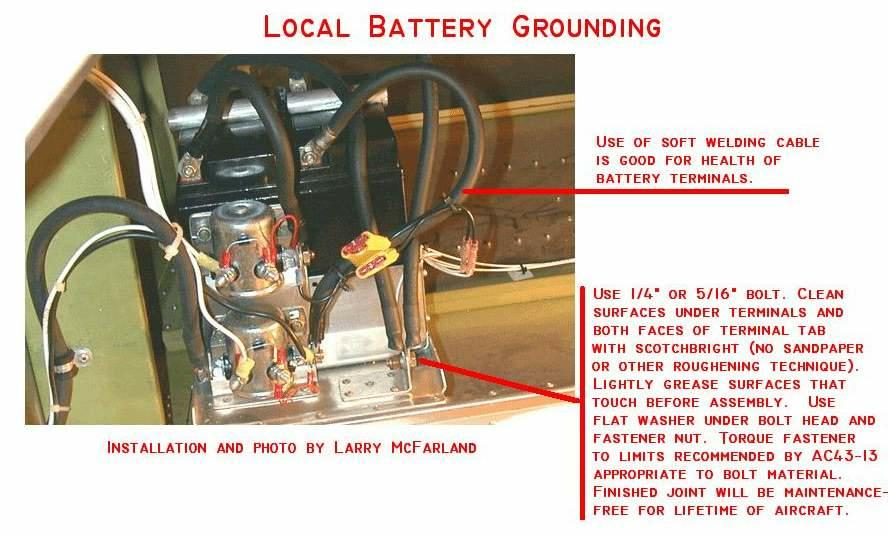

|
|
Bob's Shop Notes: |
When space and/or weight-and-balance considerations for your airplane call for mounting one or more batteries remote from engine instead of on the firewall, you not only have to provide conductors for carrying the hot (+) terminals of the battery(ies) forward, the negative (-) terminals need to find your electrical system ground as well.
Since day-one, aircraft with electrical systems have (like automobiles) used the vehicle's metallic structure as a ground return for many electrical system components including the battery. From the perspective of gross functionality this technique has worked well. But, since we in the OBAM aircraft world are both more sensitive to (and able to adjust designs for optimum performance with respect to noise or cost of ownership issues that arise later for having to find and fix 'fuzzy' ground joints), there is value in considering exactly which devices might share a common airframe ground without risk of increased noise. The latest revision to Appendix Z, Figure 15, View-A depicts the electrically "pure" ground system for any position of the battery(ies) in the airplane. Ideally, one would like to use none of the airplane's structure as part of the electrical system . . . especially the engine mount.
Having said that, a time proven compromise that does not materially affect noise issues is to use the airframe as ground for the following items:

The photo above is a exemplar dual battery installation in the tail of an all metal airplane.
The only things I would do differently in this installation is to make the battery ground tab from a piece of extruded aluminum angle with a 1/8" or so web thickness. The bent-metal tab with fat wires bolted to it represents a small failure risk at the bend due to vibration. In this particular case, both batteries ground to the same tab and failure of the tab would cause loss of both batteries.
Second, TWO robust tabs, one for each battery is a better way to go.
Fly comfortably.
'lectric Bob . . .
 Click here to contact Bob at AeroElectric Connection Click here to contact Bob at AeroElectric Connection |